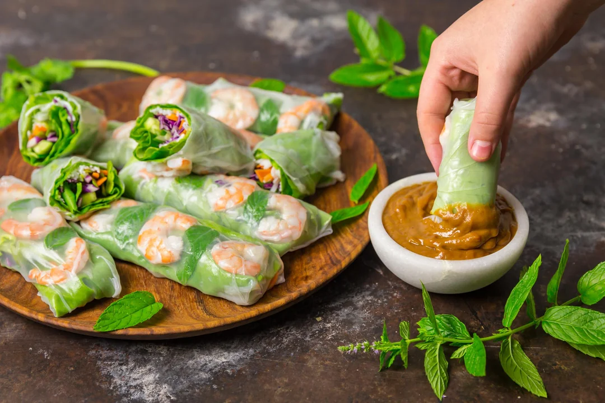

Vietnamese Summer Rolls

Description
Vietnamese style summer rolls, with a peanut dipping sauce. Can be filled with all sorts of stuff, this example has shrimp!
Ingredients
Peanut Sauce
- 3/4 cup peanut butter
- 1/3 cup hot water
- 1/4 cup hoisin sauce
- 2 tablespoons rice vin
- 1 tablespoon soy sauce
- 1 tablespoon fish sauce
- medium garlic clove
- 2 teaspoons sesame oil
- 2 teaspoons sugar
- 1 teaspoon chili-garlic paste
Rolls
- 4 ounces vermicelli noodles
- 24 medium shrimp
- 16 round rice papers
- 1 bunch mint leaves
- 16 butter or green leaf lettuce leaves
- 1 cup shredded carrots
- 1/2 of one small cucumber
- 3 medium scallions
- 1 small bunch cilantro sprigs
Steps
- For the peanut sauce: Whisk all the ingredients together in a small bowl; set aside.
- For the summer rolls: Cook the rice noodles according to the package directions. Drain and set aside.
- Bring a medium pot of salted water to a boil over high heat. Add the shrimp, turn off heat and poach until bright pink and opaque, about 1 1/2 minutes. Drain in a colander and run under very cold water until cool. Dry with paper towels and cut each shrimp in half horizontally (making them thinner). Place on a plate, cover with plastic wrap, and refrigerate until you’re ready to roll.
- Fill a wide, shallow dish large enough to hold the rice paper wrappers with warm water. Arrange all of the filling ingredients within easy reach around a work surface. Lay down a lettuce leaf and place a arrange a little bit of rice noodles, cabbage, carrots, cucumbers, scallions and a few cilantro leaves in the middle. Roll lettuce around the noodles and vegetables in a cigar shape and set aside, seam side down.
- Working with 1 wrapper at a time, submerge rice paper until it is soft and pliable, about 10 seconds (it will soften more as it sits). Remove the wrapper from the water and place it on the work surface. Lay 3 shrimp halves in a row, cut side facing up, just above the center of the wrapper, leaving about 1 inch of space on each side. Place 1 mint leaf between each shrimp. Place the filled lettuce roll just below the shrimp.
- Fold the bottom half of the rice paper wrapper over the filling and roll until the shrimp and lettuce are secured. Then fold in the sides of the wrapper. Then roll the entire wrapper so it becomes sealed, like a burrito. Place roll on a rimmed baking sheet and cover loosely with a lightly damp paper towel and plastic wrap. Repeat with the remaining wrappers and fillings. Leave a little space between each summer roll so they don’t stick together. If not serving immediately, keep the rolls covered with damp towels and plastic wrap at room temperature for up to 2 hours. Serve with the peanut sauce for dipping.